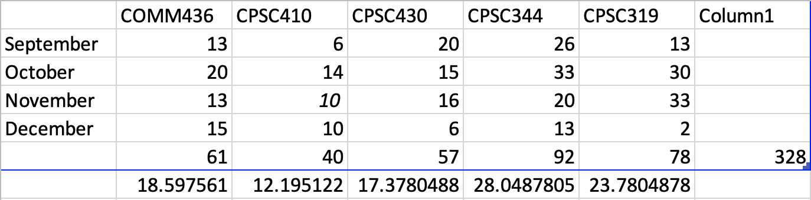

Time Well Spent
Visualizing a month of work school, and life at UBC
Chris Bolton | PLAN221
Since I started living, working, and going to school on the UBC campus over four years ago, I've always wondered how I spent my time here. I instinctively knew that I spent the majority of my life in just a handful of places, but I exactly sure why or how they compared against each other.
Armed with data from Google Calendar and my task management app Trello, this project aims to answer this question once and for all. For the purposes of visualization, I decided to focus on just one month during one term of my time at UBC. October 2019 serves as a representative sample of where I was and what I was doing during the first term of my fifth year.
Takeaways
After completing this work, I learned that the vast majority of my time was spent at just 18 places. I also learned that despite my assumption that I spend 99% of my life on school, I actually only spent 30% of the month on academics. Personal time made up 58% of my time, although sleeping took up about half of that. I also noticed that I didn’t workout at all for the month of October. While I know this isn’t representative of the entire term, it does show a lack of balance for the month.
In terms of academics, the time breakdown showed that my HCI and Software Project courses took up the most time, which wasn’t a surprise (especially since HCI had lots of lab work in the fall). It was surprising how little work was spent on Software Engineering, as I was working on a class project at the time.
Overall, the visualization gave me context into why I was spending time in the places I was during the term and how those reasons compared against each other.
Analysis and Visualization Process
To start my analysis, I first looked at my Calendar for October. It was a mess of overlapping events and assignments:
But I was able overlay larger categories of time: personal, academic, work, etc:
With this done for the entire month, I further broke down these categories based on real event data (cal invites, work schedule) as well as intuition (I spent about an hour and a half each day cooking and eating food). As I was drilling down, I calculated the relative percentages of each category.
For academics, I summed up my school-related tasks for the entire term and broke each course into its own percentage compared to the entire set. I then used these percentages to allocate the total amount of “academic” time I had overlayed in my calendar.
Finally, I inserted this data onto a map but associated categories to places. This mapping isn’t perfect, but I decided to focus my effort on the places where the vast majority of category time was spent (e.g. I may have completed a few things for a course in my dorm but I only associate the classroom and my main study area with the course on the map).
To create the 3D buildings and places, I used Mapbox Studio to trace 2D building markings. I then encoded height data for both the places (usually rooms) and the buildings themselves:
A collection of thoughts on the final visualization:
- I chose to use hue to represent the three top-line categories throughout the subcategories. This ensured that even if a user was deep into the hierarchy, they could still associate the present values with an overarching theme.
- For representing proportions of time, I used both the length of the category on the time bar as well as it’s opacity. I translated the opacity, as well as the hue, to the underlying places on the map to make a strong connection between the two.
- Where categories had two or more associated places, but I could not drill further down in the data, I opted to give written indications of where they were on screen, using notations like (left) or (right). A more perfect solution to this is to have labels appear on each of the places themselves, however this was scrapped due to the high implementation effort.
- When drilling down was no longer possible for a category, I opted to bring overall context back to the user by giving the total amount of hours for the month and the overall percentage compared to the entire month for the category.
- This project used Mapbox for the base map and rendering engine. The rest of the project was developed by hand.
- The base map is provided by Mapbox, with slight edits made by me (including to remove certain labels and grey out the land)
- In the end, the visualization contains 744 hours of time across 27 categories, 18 camera locations, 18 places, and 13 buildings,
Get started by clicking on the time bar below üëá